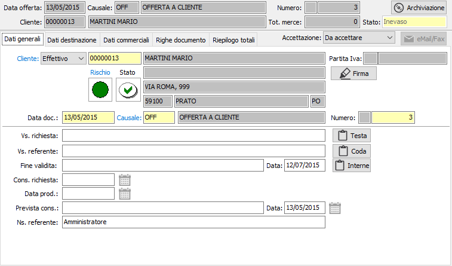
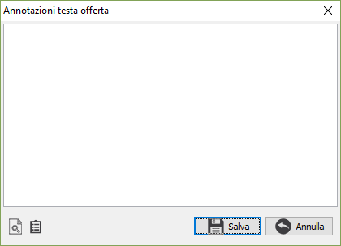
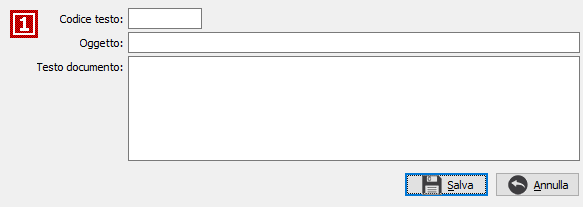

Dati generali
All’inizio di una nuova offerta il cursore è posizionato sul campo tipo cliente della linguetta dati generali, da cui inizia l’inserimento. Sola da questa pagina è possibile modificare lo stato di accettazione dell'offerta che indica se è accettata, da accettare o non accettata; è comunque presente la procedura di esito offerte per gestire più documenti assieme.
Se attivo il modulo Firma remota è presente il pulsante Firma per effettuare la firma remota e controllare lo stato di firma del documento stesso.

TIPO CLIENTE: definisce se l'offerta deve interessare un cliente provvisorio o definitivo.
CLIENTE: codice alfanumerico di 8 caratteri, presente in anagrafica clienti, provvisori o definitivi, che individua il cliente da trattare. Sul campo, la cui compilazione è obbligatoria, sono attive le funzioni di ricerca (F9) ed accesso rapido alla tabella (CTRL+W) per eventuali nuovi inserimenti o variazioni. Dopo aver selezionato il codice del cliente vengono visualizzati, senza possibilità di modifica, i dati anagrafici. Se si tratta un cliente definitivo ed è presente nella linguetta preferenze dell’anagrafica cliente, viene anche compilato automaticamente il successivo campo causale offerta con la causale esistente in anagrafica. La procedura non consente l’inserimento dell’offerta nel caso in cui il campo Codice stato dell’anagrafica cliente contenga il valore Bloccato, oppure abbia la spunta sulla casella attivazione blocco.
Vengono visualizzati, tramite appositi indicatori visivi, lo stato di rischio, derivante dal Company Shield e lo stato di affidabilità derivante dalla situazione amministrativa; cliccando sull'etichetta Rischio viene mostrata la legenda che spiega i significati dei colori mostrati, cliccando invece sull'indicatore colorato, se il servizio Credit Shield è attivo e ci sono informazioni, si accede direttamente all'analisi della partita Iva con quella riportata sul documento, posizionati sulle informazioni semaforiche. Se lo stato di rischio non viene visualizzato significa che il servizio è attivo, ma l'utente con cui si è collegati non è configurato come utente Company Shield oppure non ha l'abilitazione alla visualizzazione dei semafori.
Sia l'indicatore di rischio che l'indicatore di stato non causano alcun blocco all’inserimento del documento, ma si limitano a mettere sull’avviso l’utente.
Gli indicatori di stato possono essere così riassunti:
punto interrogativo: indica che non è presente nessun valore da controllare;
segno di spunta verde: indica che è presente un fido sufficiente a coprire gli eventuali scoperti;
punto esclamativo su fondo giallo: indica di fare attenzione perchè non è presente nessun fido ed è presente uno scoperto;
X su sfondo rosso: indica che è presente un fido che non è sufficiente a coprire lo scoperto.
Cliccando sull'immagine, se si tratta un cliente definitivo e gestiti i saldi clienti/fornitori in configurazione, si attiva la finestra video di Situazione amministrativa che consente di visualizzare il fido concesso e la situazione amministrativa dettagliata; nel caso esista uno scoperto di fido il totale viene evidenziato in rosso. L’eventuale saldo negativo fra i vari valori non comporta tuttavia alcun blocco, ma consente all’utente di decidere in merito all’opportunità di inserire il documento.
DATA DOCUMENTO: campo data in cui viene visualizzata la data di sistema, modificabile dall’utente.
CAUSALE: codice alfanumerico di 3 caratteri presente nella tabella Causali Offerte che definisce la tipologia dell’offerta in esame. Se, presente, viene visualizzata la causale esistente nelle preferenze dell’anagrafica del cliente definitivo in esame, modificabile dall’utente. Sul campo sono attive le funzioni di ricerca (F9) ed accesso rapido (CTRL+W) sulla tabella stessa.
NUMERO: campo numerico che contiene il numero progressivo dell’offerta. Viene completato automaticamente dal programma in base alla serie contenuta dalla causale. E’ modificabile dall’utente.
VOSTRA RICHIESTA: campo alfanumerico per l’eventuale descrizione degli estremi della richiesta del cliente.
VOSTRO REFERENTE: campo alfanumerico per l’eventuale descrizione del referente del cliente. Se presente, viene proposto automaticamente il referente presente nell’anagrafica del cliente intestatario dell’offerta, modificabile. Sul campo sono disponibili le funzioni di ricerca (F9) sui contatti eventualmente presenti sull'anagrafica (solo clienti definitivi).

NOTE: sono presenti tre pulsanti per le eventuali note di testa, code ed interne. La pressione del pulsante consente l'accesso alla finestra a lato da dove è possibile scrivere il testo della nota oppure, utilizzando gli appositi bottoni, caricare una nuova nota nella tabella testi note per offerte, richiamare note precedentemente inserite nella tabella. Nel caso si decida di inserire, da questa finestra, una nuova nota è sufficiente premere l'apposito bottone e compare la finestra di inserimento, riportata sotto. Se il testo della nota è già scritto, questo compare già nella nuova nota da caricare. Dopo aver inserito il codice e l'oggetto della nuova nota è sufficiente premere il pulsante Salva per memorizzare la nota appena inserita nella tabella.

FINE VALIDITÀ E DATA: campi descrittivo e data per l’inserimento del fine validità dell'offerta; viene proposta in automatico considerando il numero dei giorni riportato in configurazione offerte. La data di validità è utilizzata nella fase di evasione offerta per determinare se un'offerta è considerata ancora da evadere.
CONSEGNA RICHIESTA: campo data non obbligatorio, presente solo se previsto in configurazione offerte, per l’eventuale inserimento della data di consegna richiesta dal cliente, nel caso in cui la stessa sia unica per tutte le righe di offerta inserite. Il pulsante presente accanto al campo consente l'assegnazione, previa conferma, della data su tutte le righe esistenti.
DATA PRODUZIONE: campo data non obbligatorio, presente solo se previsto in configurazione offerte, per l’eventuale inserimento della data di approntamento comunicata dalla produzione, nel caso in cui la stessa sia unica per tutte le righe di offerta inserite. Il pulsante presente accanto al campo consente l'assegnazione, previa conferma, della data su tutte le righe esistenti.
PREVISTA CONSEGNA E DATA: campi descrittivo e data non obbligatorio, presente solo se previsto in configurazione offerte, per l’eventuale inserimento dell'effettiva consegna, nel caso in cui la stessa sia unica per tutte le righe di offerta inserite. Il pulsante presente accanto al campo consente l'assegnazione, previa conferma, della data su tutte le righe esistenti.
NOSTRO REFERENTE: campo alfanumerico per l’eventuale descrizione del referente interno.
CODICE PROGETTO: Codice alfanumerico di 15 caratteri che definisce il progetto di riferimento. Sul campo sono attive le funzioni di ricerca (F9) ed accesso diretto alla tabella (CTRL+W). Il campo è presente solo se attiva la gestione progetti.
COMMESSA PUBBLICA: Codice della commessa pubblica, sul campo sono attive le funzioni di ricerca (F9) ed accesso diretto alla tabella (CTRL+W). Il campo è presente solo se attiva la gestione della normativa antimafia e se gestita per il tipo documento.